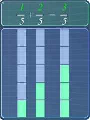
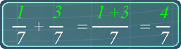
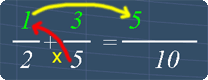
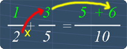
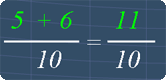
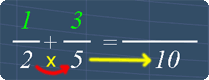
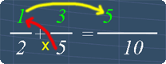
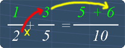
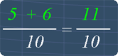

Adding Fractions
Lesson Objective
In this lesson,
we will learn the basics
behind adding
fractions that
have like and
unlike
denominators.
About This Lesson
It is quite straight forward to add
fractions after we understand the basic
ideas behind it.
This lesson shows you the important ideas that you should know when adding fractions. We will be dealing with fractions that have:
This lesson shows you the important ideas that you should know when adding fractions. We will be dealing with fractions that have:
- Like denominators
- Unlike denominators

Tip #1 - Understand Equivalent Fractions
The idea behind Equivalent
Fractions
enables us to
change a
fraction's
denominator. If
you are not very
sure about it, click
here to
watch the math
video lesson.

Tip #2 - Adding fractions with like denominators
It is quite simple to add fractions that have
like denominators.
To do so, we simply add
the numerators together while keeping the
denominator the same.
This is illustrated in the picture below:
The math video below will visually explain why we can do so.
This is illustrated in the picture below:

The math video below will visually explain why we can do so.
Tip #3 - Adding fractions with unlike denominators
To add fraction with unlike denominators, we
need to:
- Make the denominators the same (like denominators)
- Then, just add the same way as shown in Tip #2
Tip #4 - Shortcut to add fractions with unlike denominators
Fortunately, there is a short-cut to add
fractions with unlike
denominators. Below are the steps:




Step 1
Multiply both the denominators. This
gives 10.
Multiply both the denominators. This
gives 10.

Step 2
Multiply 1 with the other fraction's
denominator. This gives 5.
Multiply 1 with the other fraction's
denominator. This gives 5.

Step 3
Multiply 3 with the other fraction's
denominator. This gives 6.
Multiply 3 with the other fraction's
denominator. This gives 6.

Step 4
Adding 5 with 6 gives 11. Hence, the resulting fraction is 11/10 . That is all.
Adding 5 with 6 gives 11. Hence, the resulting fraction is 11/10 . That is all.
Math Video Transcript
Multiple Choice Questions (MCQ)
Now, let's try some MCQ questions to understand
this lesson better.
You can start by going through the series of questions on Adding Fractions or pick your choice of question below.
You can start by going through the series of questions on Adding Fractions or pick your choice of question below.
- Question 1 on adding fractions with like denominators
- Question 2 on adding fractions with unlike denominators